§Experimental & Numerical Study · Structural Engineering
Cyclic Performance of Reinforced Concrete Columns Incorporating Sandcrete Block Aggregate
Two full-scale cantilever RC columns — one built with sandcrete block aggregate, one with conventional brick aggregate — tested under reversed cyclic lateral loading, then cross-checked against a fiber-based nonlinear finite element model.
- 0Full-scale column specimens
- 0N — first-crack load, both specimens
- 0N — peak load, sandcrete column
- 0% error, numerical vs. experimental stiffness
Abstract
Sandcrete blocks are a common low-cost masonry material, but almost nothing is known about how they behave as coarse aggregate inside reinforced concrete under earthquake-like reversed loading. This study casts two full-scale cantilever RC columns — one with sandcrete block aggregate, one with conventional brick aggregate — and tests both under reversed cyclic lateral loading, tracking crack development, hysteretic response, strength and stiffness degradation, and energy dissipation. A fiber-based nonlinear finite element model, calibrated against the experimental results, is then used to check whether a simplified numerical approach can reproduce that cyclic behaviour.
The sandcrete column cracked more gradually, held onto more of its post-peak strength, and finished each cycle with less residual displacement than the brick column — despite starting from comparable initial stiffness. The numerical model tracked the experimental force–displacement response closely, reproducing the key damage mechanisms. Sandcrete aggregate looks genuinely promising for cyclic loading conditions, though the authors are careful to note this is one specimen per material — broader validation at the member and system level is still needed.
Highlights
- RC columns with sandcrete block aggregate were tested under reversed cyclic loading
- Sandcrete aggregate improved ductility and delayed post-peak strength degradation
- Cyclic damage progressed gradually with reduced residual displacement
- Numerical modeling reliably reproduced stiffness degradation and cyclic response
Section One
Introduction
Fired clay bricks dominate masonry construction across the developing world, but firing them is energy-intensive and carbon-heavy — kiln emissions and clay extraction both carry a real environmental cost. Sandcrete blocks (cement, fine sand, water) are a cheaper, lower-impact alternative already widely used in tropical construction, and a growing body of research has characterized their compressive strength, density, and durability as a standalone masonry unit.
What's missing is what happens when sandcrete block material is reused as coarse aggregate inside structural reinforced concrete — and specifically, how it behaves under the reversed cyclic loading a real earthquake would apply. Recycled concrete and brick aggregates have been studied under cyclic loading before; sandcrete block aggregate essentially hasn't. That gap matters because seismic performance hinges on exactly the properties aggregate choice can change — stiffness degradation, strength decay, energy dissipation, residual deformation, and failure mode.
Section Two
Materials & Methods
Material characterization
The sandcrete blocks used were greyish, rectangular (241 × 114 × 70 mm), averaging 3.834 kg, made of 15% cement, 35% local sand, 15% stone dust, and 35% steel slag and stone chip aggregate in a chemical admixture. Average compressive strength came out to 13.91 MPa and flexural strength to 5.58 MPa.
Table 1 — Physical properties of sandcrete blocks
| Property | Description | Standard / Method |
|---|---|---|
| Color | Greyish | Visual observation |
| Shape | Rectangular, flat surfaces, straight edges | Visual measurement |
| Size (L × W × H) | 241 × 114 × 70 mm | Standard size measurement |
| Constituents | 15% cement, 35% local sand, 15% stone dust, 35% steel slag & stone chip, BASF Masterpel-777 admixture | Supplier information |
| Weight | Average 3.834 kg | Weighing |
| Water absorption capacity | 10.14% | BDS 208:2009 |
| Efflorescence | None observed | Visual inspection |
Sieve analysis confirmed a well-graded sandcrete aggregate (fineness modulus 2.59). Bulk specific gravity of the coarse aggregate was 1.98 (apparent specific gravity 2.528), bulk density 1186 kg/m³, void ratio 40.37%. Water absorption of the sandcrete aggregate was 10.72%, moisture content 5.19%; fine aggregate water absorption was 3.3%.
Concrete mix design
Target strength was 21 MPa, mix designed per ACI 211.1-91. Nine cylindrical molds (150 × 300 mm) were cast and tested at 7, 14, and 28 days, three cylinders per batch.
Table 2 — Mix proportion, per 1 m³ fresh concrete
| Water | Cement | Sand (SSD) | Coarse aggregate (SSD) | Water/cement ratio | Slump |
|---|---|---|---|---|---|
| 205 kg | 373 kg | 502 kg | 840 kg | 0.55 | 100 mm |
Specimen design & fabrication
Two rectangular columns were reinforced and cast — 125 mm × 125 mm section, 1050 mm clear span, 1750 mm total height. Reinforcement was 4-Ø12mm longitudinal bars restrained by Ø10mm stirrups at 125 mm spacing, tied with GI wire. Concrete was placed in three compacted stages, then cured for 28 days under wet jute sacking with a drip-fed water supply — a practical substitute for a curing pond.
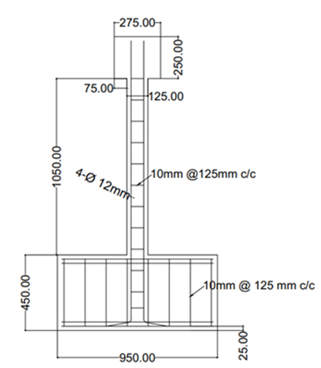
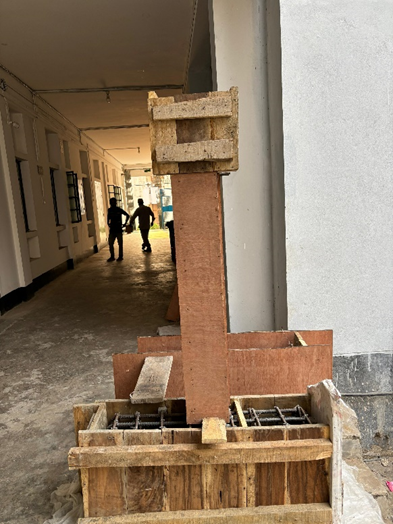
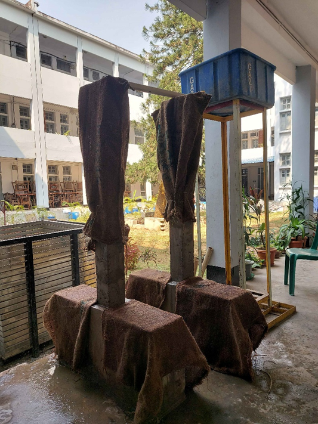
Fig. 1b — Specimen preparation.
Loading protocol & test setup
Cyclic push–pull lateral loading was applied through an actuator reacting against a wall, evenly across the top of the column, with loading and unloading cycles at increasing drift ratios (0.05% up to a planned 4% drift). The exact pattern differed slightly between the two specimens.
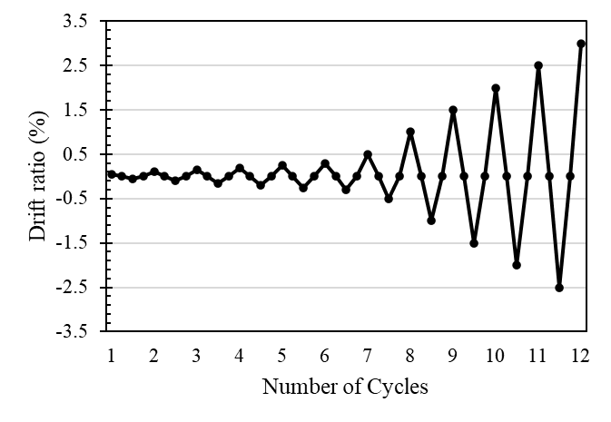
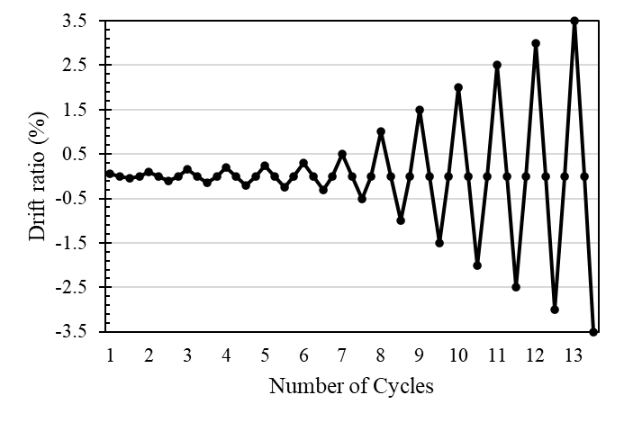
Four LVDTs tracked deflection: at the top-head centre, the top third-point, the approximate hinge location (33% of column height from the base), and the base centre. After every target drift, the column was inspected for new cracking, and ultimate load, fracture load, first-crack load, and yield-point load were all logged against their deflections.
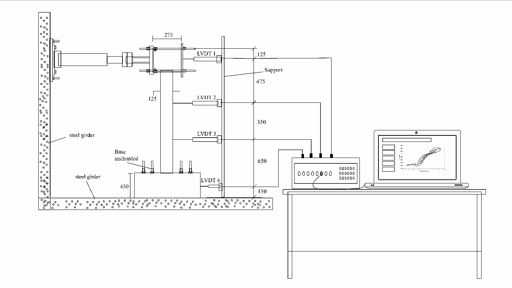
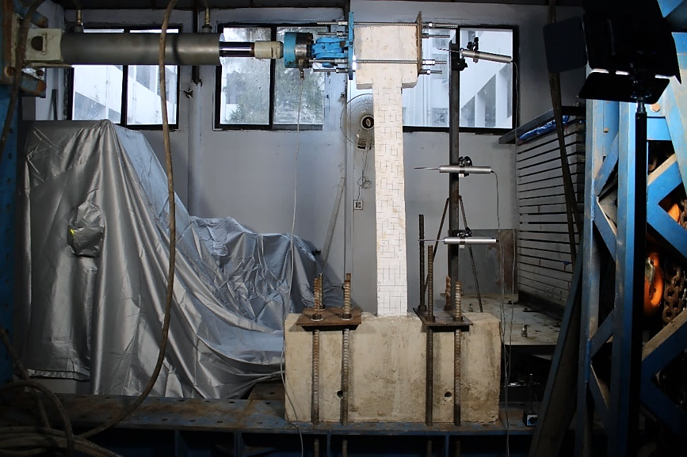
Section Three
Numerical Modeling
The cyclic response of the sandcrete-aggregate column was simulated in SeismoStruct using an inelastic, fiber-based displacement-based (DB) beam-column element. The 1.05 m cantilever was discretized with finer meshing near the base to resolve hinge formation — enabling distributed plasticity and curvature localization under the applied displacement history.
Material definitions
Concrete used the nonlinear con_ma model, calibrated for the low-strength sandcrete aggregate concrete; reinforcement used the hysteretic hyst_mat steel model, with pinching and deterioration parameters set to 0.25 and 0.60 respectively to capture yielding, the Bauschinger effect, and low-cycle fatigue.
Table 3 — Parameters used to model the column
| Property | Value | Remarks |
|---|---|---|
| Compressive strength, f'c | 16 MPa | Based on experimental testing of sandcrete aggregate concrete |
| Modulus of elasticity, Ec | 18,800 MPa | Estimated via Ec = 4700√(f'c) |
| Tensile strength, ft | 1.6 MPa | ≈10% of compressive strength |
| Strain at peak stress | 0.0020 | Typical for low-strength concrete |
| Crushing strain | −0.0035 | Defined as ultimate strain before failure |
| Confined concrete strength | 18–20 MPa | Used in confined core region, where applied |
| Confined strain at peak | 0.0025–0.0030 | Slightly higher than unconfined concrete |
| Poisson's ratio | 0.2 | Standard value for concrete |
| Density | 2400 kg/m³ | Assumed, normal-weight concrete |
| Damping ratio | 5% | Applied globally for dynamic response modeling |
Boundary condition
The column base was fully fixed (translation and rotation restrained). The cyclic displacement protocol was applied at the top control node as a fixed time-history input, replicating realistic seismic reversals with no axial load — matching the experimental design. Concrete crushing, at a strain limit of −0.0035, was set as the governing performance/failure criterion.
Section Four
Results
Crack development
Both columns developed flexural-dominated cracking concentrated near the base — a plastic hinge forming as expected — and both first cracked at the same applied load, 750 N. From there the two diverged sharply.
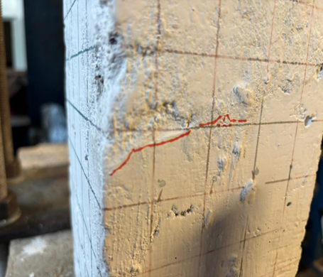
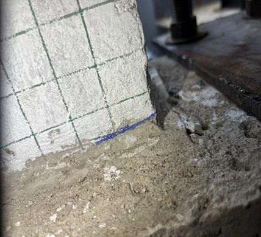
Table 4 — Comparative assessment of cracking behaviour
| Parameter | Sandcrete | Brick |
|---|---|---|
| Initial crack drift | −0.25% (negative) | 0.25% (positive) |
| Loading phase of first crack | Pulling phase | Pushing phase |
| Applied load at first crack | 750 N | 750 N |
| Crack location, first crack | Bottom right side | Middle-left side |
| Displacement at first crack | −3.09 mm | 3.0 mm |
| Maximum load at 1.0% drift | 2100 N | 1875 N |
| Maximum load at 2.5% drift | 5025 N | 4500 N |
Sandcrete cracked gradually, spread over a wider region, with limited widening in the early cycles — consistent with lower stiffness and higher deformability letting the section redistribute stress rather than concentrate it. Brick, by contrast, multiplied cracks quickly at low drift with abrupt widening — the stiffer, more angular brick aggregate concentrating stress and promoting brittle propagation.
Crack progression across increasing drift ratios, both specimens:
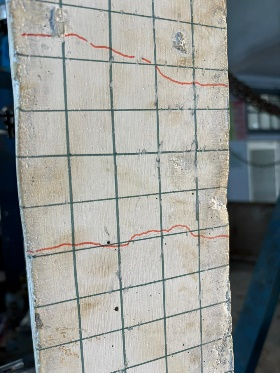
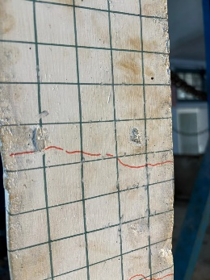
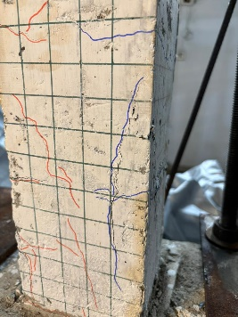
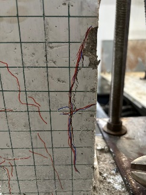
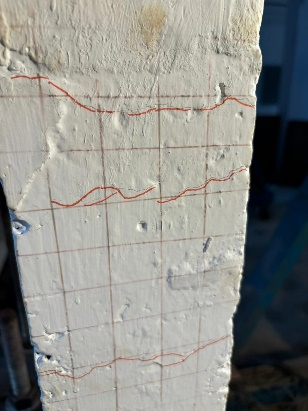
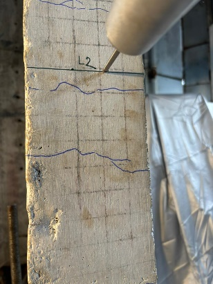
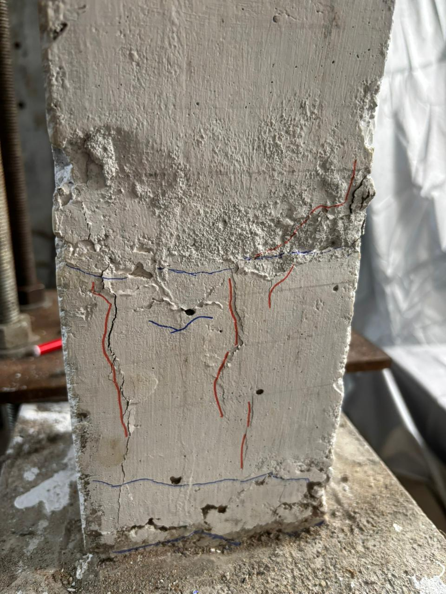
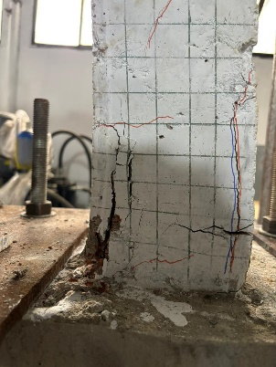
Fig. 4 — Cracking pattern at increasing drift ratios (top row: sandcrete; bottom row: brick).
Hysteretic & post-peak behaviour
Sandcrete's hysteresis loops were relatively stable with limited pinching and gradual strength loss — and stayed symmetric in both loading directions, pointing to a flexure-dominated mechanism rather than shear or bond failure. Brick's loops were wider (more apparent energy dissipation per cycle) but pinched heavily and carried significant residual displacement — a sign of bond degradation and crack reopening on each reversal, not necessarily better seismic behaviour.
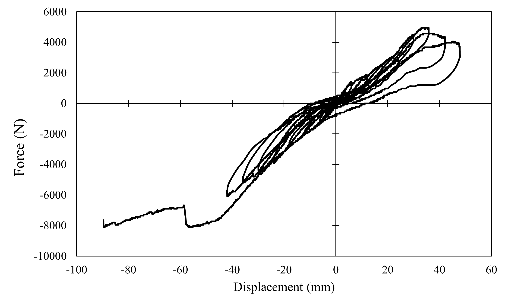
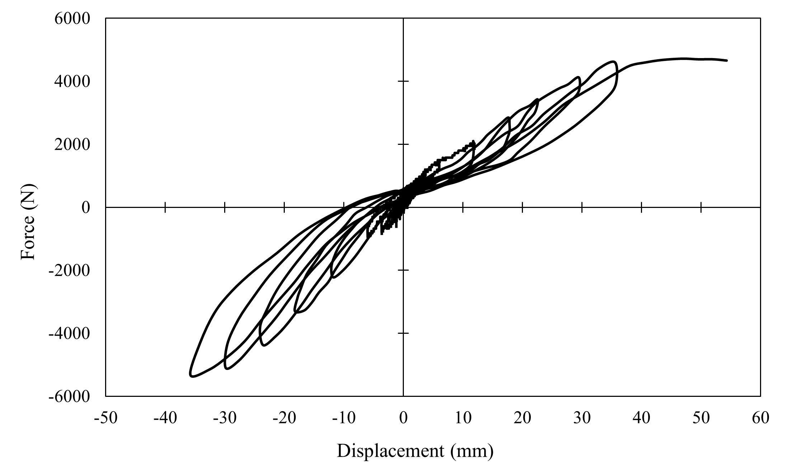
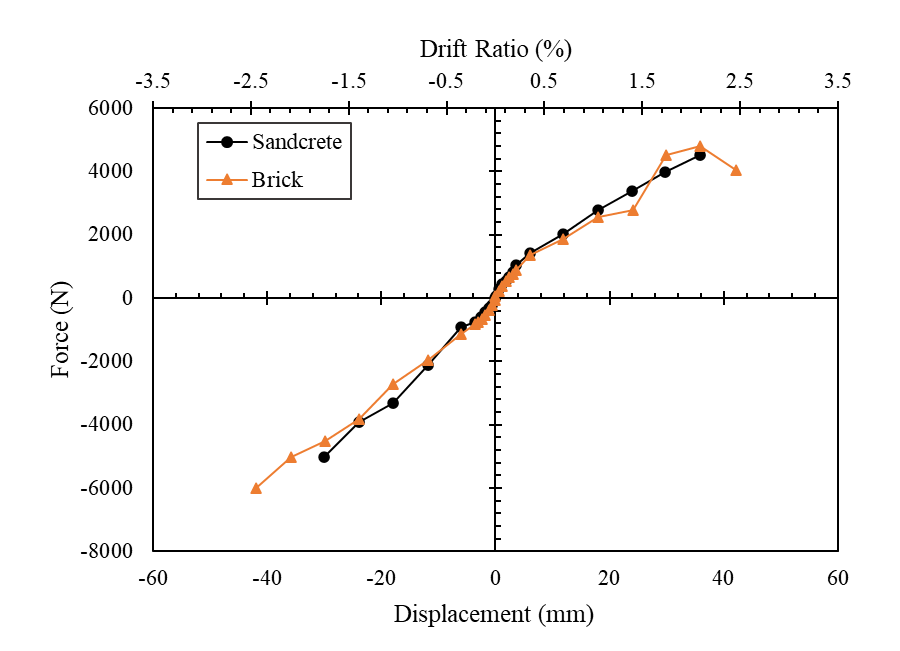
Brick reached a marginally higher peak load, but its post-peak drop was sharp — damage localized fast in the hinge region once peak strength passed. Sandcrete's post-peak decline was smoother, pointing to better ductility and stress redistribution after peak load — the more seismically desirable trait even though its peak number was lower.
Stiffness & strength degradation
Both columns lost stiffness early on as cracking and inelastic reinforcement behaviour set in, but the pattern diverged: sandcrete degraded gradually (damage distributed within the hinge region); brick held onto stiffness longer at large drift but then dropped abruptly (localized crack opening) — so brick's apparent stiffness retention doesn't translate to better seismic performance.
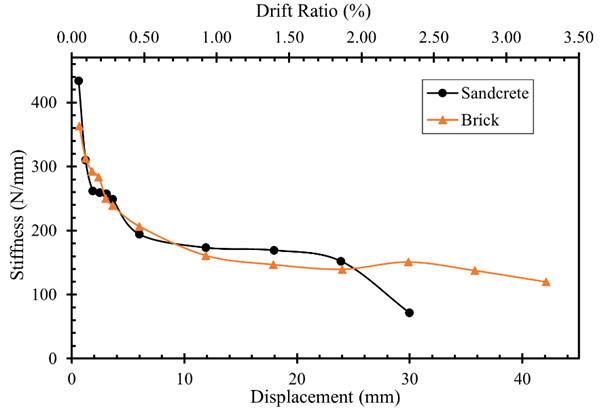
Energy dissipation capacity
Brick dissipated more cumulative energy at higher drift ratios (≈9.52×10⁵ N·mm at 3% drift) than sandcrete (≈7.18×10⁵ N·mm at 3% drift) — but that came with heavier stiffness loss and residual deformation. Sandcrete's lower, steadier energy dissipation, paired with less permanent deformation, is the profile that tends to hold up better over repeated seismic loading.
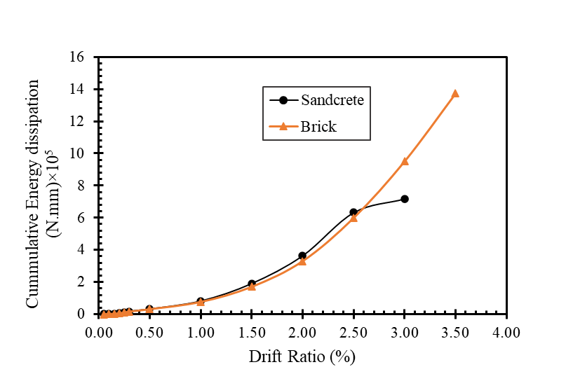
Section Five
Discussion
Damage mechanisms
Sandcrete's lower stiffness and greater flexibility let strain redistribute gradually within the critical region, delaying damage localization and abrupt crack growth — consistent with how low-strength concrete systems are expected to behave. As cyclic demand increased, steady reinforcement yielding produced subtle compression damage at the outer fibers rather than a sudden failure; the numerical model captured this as steady stiffness deterioration approaching the ultimate compressive strain limit — the signature of a ductile flexural response.
Implications for seismic performance
Taken together, the sandcrete column shows a deformation-controlled cyclic response: gradual damage, better post-peak behaviour, less residual displacement. Brick's higher initial stiffness and peak load don't outweigh its brittle degradation and rapid strength loss under sustained cycling. Since seismic performance usually hinges more on deformation capacity and stability under repeated reversal than on peak strength alone, sandcrete's balance of strength and deformability looks like a genuinely favorable trade for cyclic or seismic-type loading.
Experimental–numerical correlation
The fiber-based beam-column model reproduced the sandcrete column's global cyclic response well — initial stiffness, peak load, and overall hysteretic shape all tracked closely with experiment.
Table 5 — Numerical validation
| Parameter | Experimental | Numerical | % Error |
|---|---|---|---|
| Initial stiffness | 433.88 N/mm | 447.30 N/mm | 3.09% |
| Peak load | 5025 N | 5100 N | 1.49% |
| Ultimate displacement | 35.75 mm | 40 mm | 11.8% |
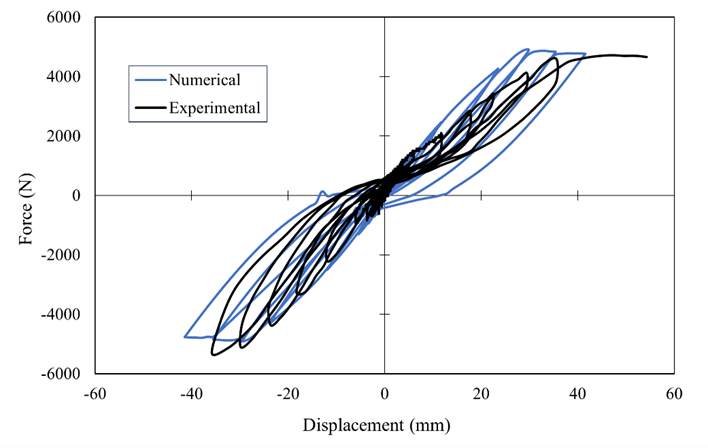
The gaps that do show up — mainly in peak force and displacement capacity — trace back to simplifications inherent in a fiber-based formulation, which doesn't explicitly model localized cracking, aggregate crushing, or bond-slip. Even so, the model reproduced stiffness degradation trends and the onset of concrete crushing well enough to be useful for preliminary seismic assessment, provided those limitations are kept in view.
Section Six
Limitations & Conclusions
Limitations
One specimen per aggregate type, tested under lateral cyclic loading with no axial load — so these are indicative behavioural trends, not statistically validated performance metrics. Axial load meaningfully changes ductility, stiffness degradation, and damage progression in real seismic conditions (compression can reduce deformation capacity and encourage brittle failure; tension can increase it), so results here shouldn't be generalized to axially-loaded members without further testing across multiple specimens and constant axial-load ratios.
Sandcrete columns cracked more gradually and held onto more post-peak deformation capacity than brick columns, despite comparable initial stiffness.
Under reversed cyclic loading, sandcrete columns showed reduced residual displacement and more stable hysteretic behaviour — better deformation tolerance.
The numerical model agreed reasonably well with experimental force–displacement response and captured stiffness degradation and overall cyclic trends.
Brick retained slightly more stiffness, but its post-peak response was more brittle — lower deformation capacity under cyclic loading.
Sandcrete block aggregate shows real potential for RC members under cyclic loading. But this is a two-specimen study — broader validation with multiple specimens, axial load effects, and frame-level testing is needed before recommending it for wider structural use.
References
Will be updated soon.